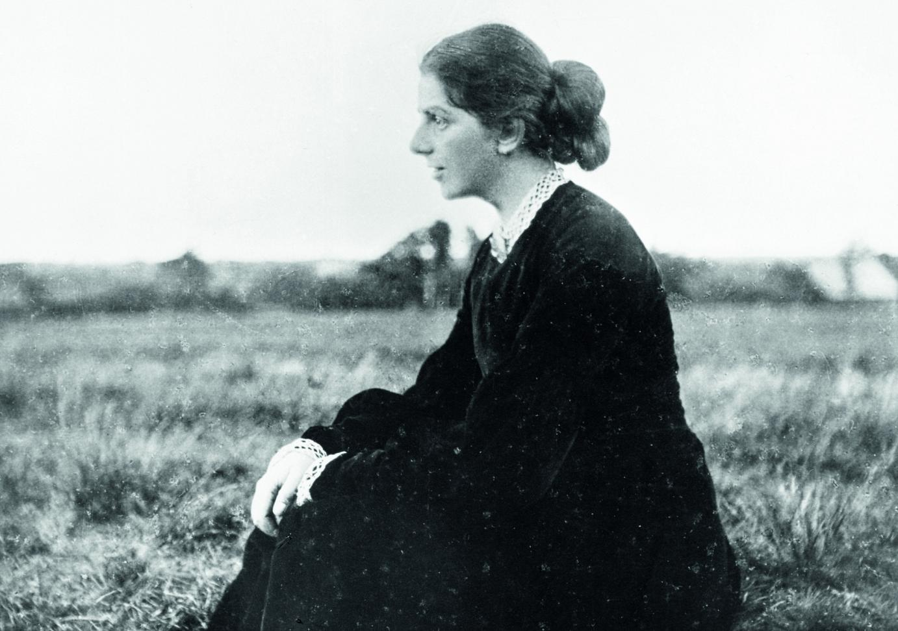
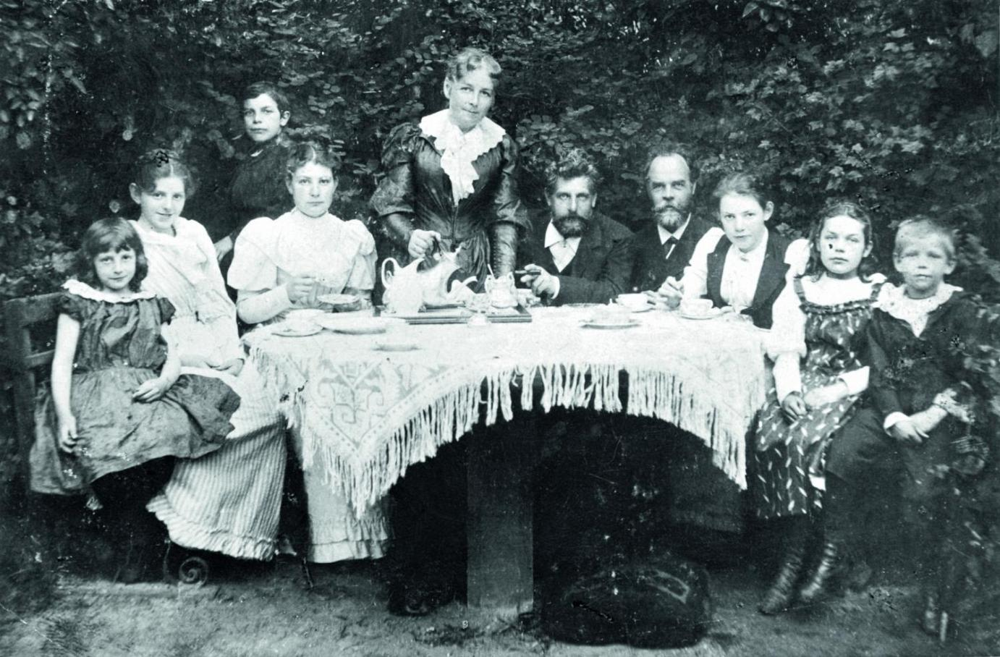
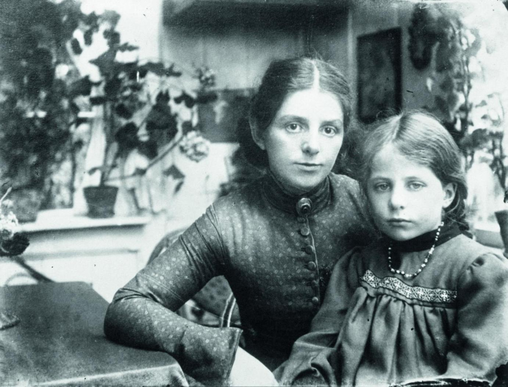
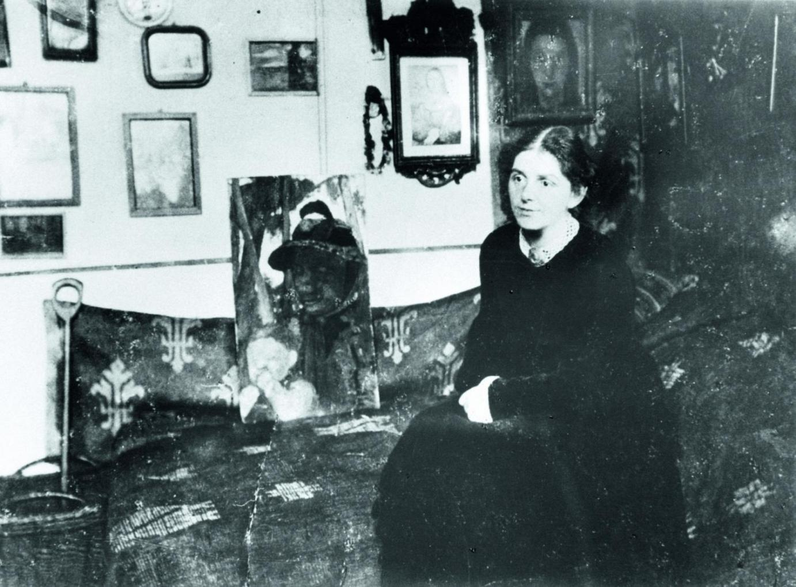

Paula Modersohn-Becker
Życie Pauli Becker do pewnego stopnia przypominało życie Rilkego. Swój talent plastyczny, który okazywała od najmłodszych lat, rozwijała z pomocą uzdolnionej artystycznie matki. Dzięki wsparciu lepiej sytuowanych krewnych mogła podjąć studia w Anglii i Berlinie, a także — po ukończeniu dwudziestego pierwszego roku życia — spędzić miesiąc w kolonii artystycznej w Worpswede.
Paula Modersohn-Becker pośród krajobrazu Worpswede
Kiedy krewni ponownie przyobiecali wspomagać ją finansowo przez następne trzy lata, ojciec bez sprzeciwu zgodził się na przeprowadzkę córki jesienią 1898 roku do Worpswede, gdzie nad jej artystycznym rozwojem miał czuwać Mackensen. Piękno okolicy, poczucie akceptacji oraz serdeczność, jaką darzyło ją grono artystów, okazały się bodźcem i zachętą do pracy. Wytrwale studiowała pod bacznym okiem Mackensena, który nie zawsze jednak aprobował jej prace. Podobnie jak młody Rilke, Paula czuła instynktownie, iż gwoli swego artystycznego rozwoju musi wyruszyć w szeroki świat. Kiedy jej obrazy i szkice, wystawione w grudniu 1899 roku w bremeńskiej Kunsthalle, spotkały się z negatywną opinią krytyków, z radością wyjechała do Paryża, by tam przez kilka miesięcy oddawać się pracy i studiom. Z Paryża słała listy do Ottona Modersohna, starszego o dziesięć lat artysty z Worpswede. Kiedy powróciła do Worpswede ze względu na słabe zdrowie, częste odwiedziny Modersohna, jak również wspólne wieczory w Barkenhoffie utwierdziły ją w przekonaniu, iż jej uczucie do malarza zostało odwzajemnione.
Oto krótkie kalendarium jej życia i twórczości, opracowane na podstawie danych biograficznych, przygotowanych z okazji wystawy „Paula Modersohn-Becker und die Kunst in Paris um 1900 – Von Cézanne bis Picasso”, prezentowanej w Kunsthalle Bremen.
8 lutego 1876
Paula Becker przychodzi na świat w Dreźnie jako trzecie z siedmiorga dzieci Carla Woldemara Beckera i jego żony Mathilde von Bültzingslöwen.
Rodzina Beckerów w ogrodzie domu przy Schwachhauser Chaussee 23 w Bremie
1888
Rodzina Beckerów przenosi się do Bremy, gdzie zamieszkuje przy Schwachhauser Chaussee 29.
1893–95
Na życzenie ojca Paula uczęszcza do bremeńskiego seminarium nauczycielskiego. Jednocześnie pobiera lekcje rysunku i malarstwa u bremeńskiego artysty Bernharda Wiegandta.
1895
Wystawa prac malarzy z kolonii artystycznej Worpswede, zaprezentowana w bremeńskiej Kunsthalle, pozostawia na Pauli głębokie wrażenie. Jest zauroczona szczególnie pracami Ottona Modersohna.
1896
Na wiosnę Paula uczestniczy w dwumiesięcznym kursie zorganizowanym przez Szkołę Malarstwa i Rysunku Towarzystwa Artystek Berlińskich. Na jesieni rozpoczyna półtoraroczne kształcenie w tejże placówce.
1897
Paula zarzuca początkowe lekcje pejzażu i wstępuje do klasy portretu prowadzonej przez malarkę Jeanne Bauck. W wolnym czasie zwiedza berlińskie muzea i prywatne galerie sztuki. Lato spędza w Bremie. Wraz z rodziną wyrusza w odwiedziny do Worpswede, gdzie spontanicznie podejmuje decyzję o pozostaniu tam na kilka tygodni razem ze swą przyjaciółką, malarką Paulą Ritter. Podczas pobytu w Worpswede poznaje osobiście Ottona Modersohna. W październiku podejmuje na nowo studia w Berlinie. Wyjeżdża do Drezna, by obejrzeć Międzynarodową Wystawę Sztuki, na której podziwia m.in. obrazy Moneta, Pissarra i Sisley’a oraz rzeźby Rodina i Meuniera.

Paula Modersohn-Becker i Clara Westhoff w atelier w Worpswede
1898
Na wystawie litografii w berlińskim Kunstgewerbemuseum Paula ma sposobność obejrzeć dzieła francuskich artystów, jak Manet, Pissarro, Renoir, Sérusier czy Vallotton. Po ukończeniu studiów w Berlinie przenosi się na jesieni do Worpswede. Tam zaprzyjaźnia się z rzeźbiarką Clarą Westhoff. Obie są uczennicami malarza Fritza Mackensena.
1899
W grudniu w bremeńskiej Kunsthalle Paula Becker wystawia dwa obrazy i kilka studiów. Arthur Fitger, malarz, poeta i krytyk, pisze o nich druzgocącą recenzję.
1900
W noc sylwestrową otwierającą nowe stulecie Paula Becker po raz pierwszy wyrusza do Paryża. Uczęszcza do prywatnej Académie Colarossi, prócz tego uczestniczy w kursie anatomii w École des Beaux-Arts. Regularnie odwiedza Luwr, gdzie kopiuje swe ulubione dzieła malarstwa i rzeźby. W galeriach przy rue Laffitte styka się ze sztuką francuskiej awangardy, jest oczarowana Cézanne’em. W czerwcu do Paryża na Wystawę Światową przybywają Otto Modersohn, Heinrich Vogeler i Fritz Overbeck. Nagła śmierć żony Modersohna, Helene, przerywa wspólny pobyt. Z końcem czerwca Paula Becker wraca do Worpswede. W sierpniu przyjeżdżają tam Carl Hauptmann oraz Rainer Maria Rilke. Z Rilkem łączy Paulę nić intymnej przyjaźni. 12 września Paula Becker zaręcza się z Ottonem Modersohnem. Tego roku Paula maluje w Worpswede liczne pejzaże.
1901
Z początkiem roku Paula przez kilka tygodni uczęszcza w Berlinie do szkoły kucharskiej. W marcu powraca do Worpswede. 25 maja Paula Becker poślubia Ottona Modersohna, który z pierwszego małżeństwa ma już trzyletnią córkę Elsbeth. Podróż poślubna wiedzie przez Berlin, Drezno i Pragę do Monachium oraz do kolonii artystycznej Dachau. Po powrocie do Worpswede Otto i Paula Modersohnowie poświęcają się pracy artystycznej.
1902
Cały rok naznaczony jest ścisłą współpracą artystyczną Modersohnów. W pracach Pauli przedstawienia figuratywne z wolna zyskują przewagę nad malarstwem pejzażowym.
Paula Modersohn-Becker z Elsbeth w ogrodzie w Worpswede, rok 1903
1903
W lutym i marcu Paula Modersohn-Becker po raz drugi przebywa w Paryżu, znów kształci się w Académie Colarossi. W Luwrze odkrywa wczesną sztukę Egiptu oraz antyku. Odwiedza Rodina w jego paryskim atelier, szczególne upodobanie znajdując w jego rysunkowych aktach.
1904
Paula i Otto Modersohnowie wraz z małżeństwem Vogelerów oraz rodzeństwem Pauli, Milly i Kurtem, odwiedzają Fischerhude. Podążając śladami Rembrandta, Modersohnowie podróżują do Drezna, Kassel i Braunschweig.
1905
Od lutego do kwietnia trwa trzeci pobyt Pauli Modersohn-Becker w Paryżu. Tym razem uczęszcza do Académie Julian. Otto Modersohn, siostra Pauli, Milly, oraz Vogelerowie przyjeżdżają w odwiedziny. Modersohnowie mają sposobność zwiedzić ekspozycję dzieł Gauguina ze zbiorów Gustave’a Fayeta, które pozostawiają na Pauli ogromne wrażenie. Poza tym odwiedza ona również Salon des Indépendants, w którym prezentowana jest retrospektywa prac van Gogha. Powróciwszy do Worpswede, Paula prosi swą przebywającą w Paryżu siostrę Hermę o przesłanie literatury poświęconej Gauguinowi. W Worpswede odwiedza Paulę Rainer Maria Rilke. W liście do mecenasa Karla von der Heydta poeta zwraca jego uwagę na nowe prace malarki.
Paula Modersohn-Becker w swoim atelier u Brünjesa, rok 1905
1906
Z końcem lutego Paula Modersohn-Becker po raz czwarty wyrusza do Paryża, chcąc ostatecznie zerwać nie tylko z Worpswede, lecz także z mężem Ottonem Modersohnem. W kwietniu wyjeżdża razem ze swą siostrą Hermą do Bretanii. Odwiedza rzeźbiarza Bernharda Hoetgera, którego pochlebne słowa o jej obrazach wywołują prawdziwy zapał twórczy. Artystka tworzy w tym okresie znaczące akty i martwe natury. Na jesieni Paula i Otto Modersohnowie na powrót zamieszkują razem w atelier przy Boulevard Montparnasse. Oboje małżonkowie wystawiają pod koniec roku swe prace w bremeńskiej Kunsthalle. Gustav Pauli, dyrektor muzeum i przyszły biograf malarki, publikuje nad wyraz pochlebną recenzję na łamach „Bremer Nachrichten”. To pierwsze i jedyne oficjalne słowa uznania dla artystki, wypowiedziane za jej życia.
1907
Na wiosnę Otto i Paula Modersohnowie powracają do Worpswede. Paula spodziewa się dziecka. 2 listopada przychodzi na świat córka Mathilde. 18 dni później Paula Modersohn-Becker umiera wskutek embolii. Zostaje pochowana na cmentarzu w Worpswede.
Fotografie pochodzą ze zbiorów Paula Modersohn-Becker Museum, Museen Böttcherstraße.